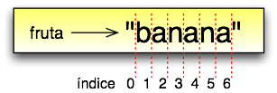

Tópicos
Até aqui, vimos três diferentes tipos de dado: int, float e string. Strings são qualitativamente diferentes dos outros dois tipos porque são feitas de pedaços menores - caracteres.
Tipos que consistem de pedaços menores são chamados tipos de dados compostos. Dependendo do que estejamos fazendo, pode ser que precisemos tratar um tipo de dado composto como uma coisa única, ou pode ser que queiramos acessar suas partes. Esta ambigüidade é útil.
O operador colchete seleciona um único caractere de uma string.:
>>> fruta = "banana"
>>> letra = fruta[1]
>>> print letra
A expressão fruta[1] seleciona o caractere número 1 de fruta. A variável letra referencia ou refere-se ao resultado da expressão. Quando exibimos letra, temos uma surpresa:
a
A primeira letra de "banana" não é a. A menos que você seja um cientista da computação. Neste caso, você deve entender a expressão dentro dos colchetes como um deslocamento (offset,) a partir do começo da string, e o deslocamento da primeira letra é zero. Assim, b é a 0ª (“zero-ésima”) letra de "banana", a é a 1ª (“um-ésima”, diferente de primeira), e n é a 2ª (“dois-ésima”, diferente de segunda) letra.
Para pegar a primeira letra de uma string, você simplesmente põe 0, ou qualquer expressão que resulte o valor 0, dentro dos colchetes:
>>> letra = fruta[0]
>>> print letra
b
A expressão entre colchetes é chamada de índice. Um índice especifica um membro de um conjunto ordenado, neste caso o conjunto de caracteres da string. O índice indica aquele membro que você quer, daí seu nome. Ele pode ser qualquer expressão inteira.
A função len retorna o número de caracteres de uma string:
>>> fruta = "banana"
>>> len(fruta)
6
Para pegar a última letra de uma string, você pode ficar tentado a fazer alguma coisa assim:
comprimento = len(fruta)
ultima = fruta[comprimento] # ERRO!
Não vai funcionar. Isto vai causar o seguinte erro em tempo de execução (runtime error): IndexError: string index out of range. (ErroDeIndice: índice da string fora do intervalo). A razão é que não existe 6ª letra em "banana". Já que começamos a contar do zero, as seis letras são numeradas de 0 a 5. Para pegar o último caractere, temos que subtrair 1 de comprimento:
comprimento = len(fruta)
ultima = fruta[comprimento-1]
Como alternativa, podemos usar índices negativos, os quais contam de trás pra frente os elementos da string. A expressão fruta[-1] resulta a última letra, fruta[-2] resulta a penúltima (a segunda de trás para frente), e assim por diante.
Várias computações envolvem o processamento de uma string um caractere de cada vez. Muitas vezes elas começam com o primeiro, selecionam um de cada vez, fazem alguma coisa com ele, e continuam até o fim. Este padrão de processamento é chamado uma travessia (traversal, com a idéia de “percorrimento”). Uma maneira de codificar uma travessia é com um comando while:
indice = 0
while indice < len(fruta):
letra = fruta[indice]
print letra
indice = indice + 1
Este loop percorre a string e exibe cada letra em sua própria linha. A condição do loop é indice < len(fruta), assim, quando índice é igual ao comprimento da string, a condição se torna falsa, e o corpo do loop não é executado. O último caractere acessado é aquele com o índice len(fruta)-1, que vem a ser o último caractere da string.
Como um exercício, escreva uma função que tome uma string como argumento e devolva suas letras de trás para frente, uma por linha.
Usar um índice para percorrer um conjunto de valores é tão comum que Python oferece uma sintaxe alternativa simplificada - o loop for:
for char in fruta:
print char
A cada vez através do loop, o próximo caractere da string é atribuído à variável char. O loop continua até que não reste mais caracteres.
O exemplo seguinte mostra como usar concatenação e um loop for para gerar uma série abecedário. “Abecedário” se refere a uma série ou lista na qual os elementos aparecem em ordem alfabética. Por exemplo, no livro de Robert McCloskey’s Make Way for Ducklings, os nomes dos “ducklings” são Jack, Kack, Lack, Mack, Nack, Ouack, Pack e Quack. O loop seguinte, produz como saída aqueles nomes, em ordem:
prefixos = "JKLMNOPQ"
sufixo = "ack"
for letra in prefixos:
print letra + sufixo
A saída deste programa é:
Jack
Kack
Lack
Mack
Nack
Oack
Pack
Qack
Naturalmente, esta saída não está cem por cento certa porque “Ouack” e “Quack” estão escritos de maneira errada.
Como um exercício, modifique o programa para corrigir este erro.
Um segmento de uma string é chamado de uma fatia. Selecionar uma fatia é similar a selecionar um caractere:
>>> s = "Pedro, Paulo e Maria"
>>> print s[0:5]
Pedro
>>> print s[7:12]
Paulo
>>> print s[16:21]
Maria
O operador [n:m] retorna a parte da string do “n-ésimo” caractere ao “m-ésimo” caractere, incluindo o primeiro mas excluindo o último. Este comportamento não é intuitivo; ele faz mais sentido se você imaginar os índices apontando para os intervalos entre os caracteres, como no seguinte diagrama:
Se você omitir o primeiro índice (antes dos dois pontos “:”), a fatia começa do início da string. Se você omitir o segundo índice, a fatia vai até o final da string. Assim:
>>> fruta = "banana"
>>> fruta[:3]
'ban'
>>> fruta[3:]
'ana'
O que você acha de s[:] significa?
O operador de comparação funciona com strings. Para ver se duas strings são iguais:
if palavra == "banana":
print "Sim, nós não temos bananas!"
Outras operações de comparação são úteis para colocar palavras em ordem alfabética:
if palavra < "banana":
print "Sua palavra," + palavra + ", vem antes de banana."
elif palavra > "banana":
print "Sua palavra," + palavra + ", vem depois de banana."
else:
print "Sim, nós não temos bananas!"
Entretanto, você deve atentar para o fato de que Pyhton não manipula letras maiúsculas e minúsculas da mesma maneira que as pessoas o fazem. Todas as letras maiúsculas vêm antes das minúsculas. Como resultado:
Sua palavra, Zebra, vem antes de banana.
Uma maneira comum de resolver este problema é converter as strings para um formato padrão, seja todas minúsculas, ou todas maiúsculas, antes de realizar a comparação. Um problema mais difícil é fazer o programa perceber que zebras não são frutas.
É tentador usar o operador [] no lado esquerdo de uma expressão de atribuição, com a intenção de alterar um caractere em uma string. Por exemplo:
saudacao = "Alô, mundo!"
saudacao[0] = 'E' # ERRO!
print saudacao
Em vez de produzir a saída Elô, Mundo!, este código produz o erro em tempo de execução (runtime error): TypeError: object doesn't support item assignment (ErroDeTipo: objeto não dá suporte à atribuição de item.)
Strings são imutáveis, o que significa que você não pode mudar uma string que já existe. O melhor que você pode fazer é criar uma nova string que seja uma variação da original:
saudacao = "Alô, mundo!"
novaSaudacao = 'E' + saudação[1:]
print novaSaudacao
A solução aqui é concatenar uma nova primeira letra com uma fatia de saudação. Esta operação não tem nenhum efeito sobre a string original.
O que faz a seguinte função?:
def find(str, ch):
indice = 0
while indice < len(str):
if str[indice] == ch:
return indice
indice = indice + 1
return -1
Num certo sentido, find (encontrar) é o oposto do operador []. Em vez de pegar um índice e extrair o caractere correspondente, ela pega um caractere e encontra (finds) em qual índice aquele caractere aparece. Se o caractere não é encontrado, a função retorna -1.
Este é o primeiro exemplo que vemos de uma instrução return dentro de um loop. Se str[indice] == ch, a função retorna imediatamente, abandonando o loop prematuramente.
Se o caractere não aparece na string, então o programa sai do loop normalmente e retorna -1.
Este padrão de computação é às vezes chamado de travessia “eureka”, porque tão logo ele encontra (find) o que está procurando, ele pode gritar “Eureka!” e parar de procurar.
Como um exercício, modifique a função find (encontrar) de modo que ela receba um terceiro parâmetro, o índice da string por onde ela deve começar sua procura.
O programa seguinte conta o número e vezes que a letra a aparece em uma string:
fruta = "banana"
contador = 0
for letra in fruta:
if letra == 'a'
contador = contador + 1
print contador
Este programa demonstra um outro padrão de computação chamado de contador. A variável contador é inicializada em 0 e então incrementada cada vez que um a é encontrado. (Incrementar é o mesmo que aumentar em um; é o oposto de decrementar, e não tem relação com excremento, que é um substantivo.) Quando se sai do loop, contador guarda o resultado - o número total de a‘s.
Como um exercício, encapsule este código em uma função chamada contaLetras, e generalize-a de modo que possa aceitar uma string e uma letra como parâmetros.
Como um segundo exercício, reescreva esta função de modo que em vez de percorrer a string, ela use a versão com três parâmetros de find (encontrar) da seção anterior.
O módulo string contém funções úteis que manipulam strings. Conforme é usual, nós temos que importar o módulo antes que possamos utilizá-lo:
>>> import string
O módulo string inclui uma função chamada find (encontrar) que faz a mesma coisa que a função que escrevemos. Para chamá-la, temos que especificar o nome do módulo e o nome da função usando a notação de ponto.:
>>> fruta = "banana"
>>> indice = string.find(fruta, "a")
>>> print indice
1
Este exemplo demonstra um dos benefícios dos módulos - eles ajudam a evitar colisões entre nomes de funções nativas e nomes de funções definidas pelo usuário. Usando a notação de ponto podemos especificar que versão de find (encontrar) nós queremos.
De fato, string.find é mais generalizada que a nossa versão. Primeiramente, ela pode encontrar substrings, não apenas caracteres:
>>> string.find("banana", "na")
2
Além disso, ela recebe um argumento adicional que especifica o índice pelo qual ela deve começar sua procura:
>>> string.find("banana", "na", 3)
4
Ou ela pode receber dois argumentos adicionais que especificam o intervalo de índices:
>>> string.find("bob", "b", 1, 2)
-1
Neste exemplo, a busca falha porque a letra b não aparece no intervalo entre 1 e 2 (não incluindo o 2) do índice.
Muitas vezes é útil examinar um caractere e testar se ele é maiúsculo ou minúsculo, ou se ele é um caractere ou um dígito. O módulo string oferece várias constantes que são úteis para esses propósitos.
A string string.lowercase contém todas as letras que o sistema considera como sendo minúsculas. Similarmente, string.uppercase contém todas as letras maiúsculas. Tente o seguinte e veja o que você obtém:
>>> print string.lowercase
>>> print string.uppercase
>>> print string.digits
Nós podemos usar essas constantes e find (encontrar) para classificar caracteres. Por exemplo, se find(lowercase, ch) retorna um valor outro que não -1, então ch deve ser minúsculo:
def eMinusculo(ch):
return string.find(string.lowercase, ch) != -1
Como uma alternativa, podemos tirar vantagem do operador in, que determina se um caractere aparece em uma string:
def eMinusculo(ch):
return ch in string.lowercase
Ainda, como uma outra alternativa, podemos usar o operador de comparação:
def eMinusculo(ch):
return 'a' <= ch <= 'z'
Se ch estiver entre a e z, ele deve ser uma letra minúscula.
Como um exercício, discuta que versão de eMinusculo você acha que será a mais rápida. Você pode pensar em outras razões além da velocidade para preferir uma em vez de outra?
Outra constante definida no módulo string pode te surpreender quando você executar um print sobre ela:
>>> print string.whitespace
Caracteres de espaçamento (ou espaços em branco) movem o cursor sem “imprimir” qualquer coisa. Eles criam os espaços em branco entre os caracteres visíveis (pelo menos numa folha de papel branco). A string constante string.whitespace contém todos os caracteres de espaçamento, incluindo espaço, tabulação (\t) e nova linha (\n).
Existem outras funções úteis no módulo string, mas este livro não pretende ser um manual de referência. Por outro lado, Python Library Reference é exatamente isto. Em meio a uma abundante documentação, ele está disponível no site da web do Python, www.python.org.